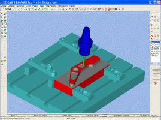

|
 14.
versiyonuyla pratik ve kolay kullanýmýna yenilikler katan
EZ-CAM, ayný zamanda endüstriden talep edilen fonksiyonlarýn
eklendiði ve çalýþma performansýnda artýþ saðlanan yeni versiyonunu
CAD/CAM kullanýcýlarýna sunuyor. Bu son versiyondan itibaren
tüm EZ-CAM paketlerinde "Türkçe dil desteði" de
bulunuyor. 14.
versiyonuyla pratik ve kolay kullanýmýna yenilikler katan
EZ-CAM, ayný zamanda endüstriden talep edilen fonksiyonlarýn
eklendiði ve çalýþma performansýnda artýþ saðlanan yeni versiyonunu
CAD/CAM kullanýcýlarýna sunuyor. Bu son versiyondan itibaren
tüm EZ-CAM paketlerinde "Türkçe dil desteði" de
bulunuyor.
Genel olarak EZ-CAM V14 paketlerindeki yeniliklerden bazýlarý
þunlardýr:
EZ-MILL
3D / Pro
- 
Mevcut operasyon þartlarýnda (kullanýlan takým çapý ve kesilen
profile göre) iþlenememiþ olan bölgeler otomatik olarak
hesaplanýr,
-
Kullanýlan takýma göre iþlemlerin gruplandýrýlmasý sayesinde
aparat kullanýlarak yapýlan tekrarlý iþlemlerdeki boþta
ilerlemelerde harcanan zaman en aza indirilir,
-
Çok gözlü iþlemlerde kesici takýmýn boþta yaptýðý hareketlerini
en aza indiren ve kesme verimini artýran yeni fonksiyonlar
eklenmiþtir,
-
3B yüzeylerden oluþan modellerde yapýlan yüzey seçme iþlemleri
kolaylaþtýrýlmýþtýr,
-
Sürekli dalarak profil kesim fonksiyonu, takýmýn parçadan
ayrýlmadan tabana kadar herhangi bir profili helisel olarak
inmesini saðlayarak tezgahýn boþta yaptýðý hareketleri sýfýrlar,
parçaya giriþ noktalarýndaki izlerin oluþmamasý saðlanýr
ve takýmýn parçaya dalýþlarý esnasýndaki zorlanmalar minimize
edilir.
-
4-eksen (divizörlü) kesimde radyal duvar oluþturma, konik
parça desteði ve 3-boyutlu eðri üzerinden kesim yapma fonksiyonlarý,
-
Kesme simülasyonunda takým tutucu, tabla ve mengeneler tanýmlanarak
bunlarýn arasýndaki çarpmalar kontrol edilmektedir. Ayrýca
iþlem sonunda kesilememiþ olan bölgeler 3-boyut katý model
olarak görüntülenebilir.
-
Yüzey sýnýrlarýný patikaya dönüþtürme özelliði kullanýlarak,
EZ-CAM'de yaratýlmýþ olan veya diðer 3-boyutlu tasarým paketlerinden
gelen katý/yüzey modellerden geometri ve patika otomatik
olarak hazýrlanarak kesime geçilebilmektedir.
-
Direkt olarak patika ofsetlemesi yapýlmasý, katý model datasýndan
üretilmiþ patikalarýn modifikasyonu için kolaylýk saðlar.
-
Yeni "Patika-Zincir" komutu, çizim ortamýndaki
tüm geometriyi (ayrýk olan tüm çizgiler, çember ve yaylar)
tek týklamayla birbirine baðlý tek bir kesim patikasý haline
getirebilmektedir.
-
Rhinoceros 3D modelleme paketiyle çift-yönlü olarak dosya
transferi ve "KOPYALA / YAPIÞTIR" metoduyla obje
ve çizim aktarýmý yapýlabilmektedir.
-
Türkçe dil desteði bulunmaktadýr
EZ-TURN
-
EZ-CAM'de yaratýlmýþ olan veya diðer 3-boyutlu tasarým paketlerinden
gelen katý/yüzey modellerden, tornalama profili çizimine
gerek kalmadan otomatik olarak kesim patikasý oluþturma
özelliði;
-
Kesme sýnýrýný otomatik olarak çizim patikalarýndan türetme;
-
Tezgahlarýn özelliklerine baðlý olarak zaman zaman kullanýlmasý
gerekebilen opsiyon komutlarýn (parça tutucu, punta hareketi,
vs..) operasyon sýralamasý içinde kolayca tanýmlanabilmesi;
-
Kesme simülasyonu özelliklerindeki geliþmelerle, katý model
olarak tanýmlanabilen ayna, punta ve sabitleyici gibi parçalarla
takým tutucu ve kesme ucunun temasý kontrol edilerek boþta
hareketlerde ve kesme esnasýnda herhangi bir çarpmanýn olup
olmadýðý belirlenmektedir. Ayný zamanda takým ucunun giremediði
kesilememiþ bölgeler katý model olarak oluþturulur.
-
Rhinoceros 3D modelleme paketiyle çift-yönlü olarak dosya
transferi ve "KOPYALA / YAPIÞTIR" metoduyla obje
ve çizim aktarýmý yapýlabilmektedir.
- Türkçe
dil desteði bulunmaktadýr
EZ-EDM
-
XYUV (4-Eksen) kesim operasyonu çok pasolu olarak yapýlabilmekte,
ayný zamanda her kesim için farklý teknoloji-ofset deðerleri
verilebilmektedir.
-
Yüzey sýnýrlarýný patikaya dönüþtürme özelliði kullanýlarak,
EZ-CAM'de yaratýlmýþ olan veya diðer 3-boyutlu tasarým paketlerinden
gelen katý/yüzey modellerden geometri ve patika otomatik
olarak hazýrlanarak kesime geçilebilmektedir.
-
Direkt olarak patika ofsetlemesi yapýlmasý, katý model datasýndan
üretilmiþ patikalarýn modifikasyonu için kolaylýk saðlar.
-
Yeni "Patika-Zincir" komutu, çizim ortamýndaki
tüm geometriyi (ayrýk olan tüm çizgiler, çember ve yaylar)
tek týklamayla birbirine baðlý tek bir patika haline getirebilmektedir.
-
Rhinoceros 3D modelleme paketiyle çift-yönlü olarak dosya
transferi ve "KOPYALA / YAPIÞTIR" metoduyla obje
ve çizim aktarýmý yapýlabilmektedir.
-
Baþlama deliðinden parçaya ilk giriþin olduðu bölgede farklý
bir giriþ deðeri tanýmlanabilmesi sayesinde özellikle temas
alanýnýn düzgün olmadýðý parçalarda oluþan tel kopmasý gibi
problemler giderilebilir.
-
XYUV (4-eksen) kesimde alýnan G-kodlarýnda radyüslü bölgeler
için yay komutlarý üretilerek (G02, G03 kodlarý kullanýlarak)
alýnan programýn daha kýsa olmasý ve kesimin yay dönüþlerinde
daha düzgün yapýlmasý saðlanmýþ olur.
- Türkçe
dil desteði bulunmaktadýr
Not:
Ürünle ilgili bilgiler ve demo programlar www.ezcam.com
adresinden alýnabilir
EZCAM
Solutions Inc. hakkýnda:
Ýlk
olarak 1980'de Bridgeport tarafýndan yaratýlan EZ-CAM programýnýn
geliþtirilmesi, dünya çapýndaki satýþ, pazarlama ve teknik
destek hizmetlerini sürdüren firma, A.B.D. ve Türkiye dýþýnda
Almanya, Ýngiltere, Japonya, Hollanda, Belçika ve Çin'deki
satýþ ve teknik destek bürolarýyla kullanýcýlarýna ulaþmaktadýr.
Ýstanbul'daki Türkiye Ýrtibat Ofisi 2002'de faaliyete geçen
EZCAM bu þekilde Türkiye'deki tanýtým ve teknik destek hizmetlerini
daha iyi saðlayabilmektedir.
Kullanýcýlarýna
kabul edilebilir fiyatlara, iþlevsel ve güçlü CAD/CAM çözümleri
sunmayý hedefleyen EZ-CAM yazýlým paketi, CNC iþleme merkezi,
CNC torna ve CNC tel erozyon tezgahlarýna yönelik tasarým
ve imalat programlarý içermektedir;
-
EZ-MILL (CNC Ýþleme Merkezi, CAD/CAM)
- EZ-TURN
(CNC Torna, CAD/CAM)
- EZ-EDM
(CNC Tel Erozyon, CAD/CAM)
- FilterMAX
(CNC Ýþleme Merkezi, Takým Yolu Optimizasyon ve Filtreleme)
- EZ-DNC
(Tüm CNC tezgahlar, DNC)
- TextCAM
(CNC Pantoðraf, CAM)
Ýrtibat:
Emre
Mýsýrlýoðlu
emre@ezcam.com
EZ-CAM Türkiye Ýrtibat Bürosu
Beyoðlu Ýstanbul
www.ezcam.com.tr |